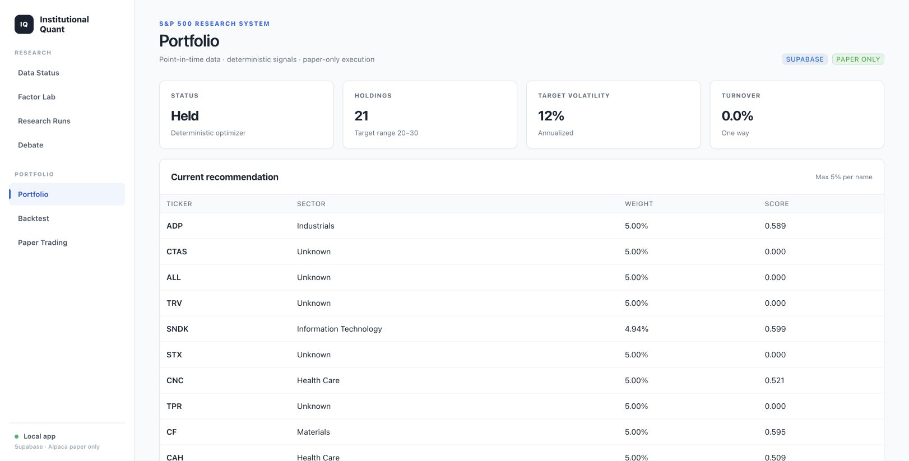

旗舰项目 南洋理工大学 Pinnacle 决赛入围
SymFace：AR 与生物特征 AI 应用
端到端 iOS/watchOS 健康管理系统，整合 ARKit TrueDepth 三维追踪、100+ 面部特征点、HealthKit 上下文，以及在 Apple Foundation Models 与云端大语言模型之间进行路由的混合 AI 引擎。
端侧优先的生物特征工作流 · 隐私感知的 AI 路由 · NTU Pinnacle 决赛入围
这是一个旗舰级应用人工智能原型，并非经过临床验证的医疗产品；源代码目前未公开。
SwiftUI · ARKit · HealthKit · Apple Foundation Models

公开仓库 研究平台
标普 500 机构级多智能体量化平台
本地优先的研究终端，从数据导入、因子评分、滚动窗口建模，到证据包、分析师辩论、约束投资组合和纸面订单预览，完整保留时间点数据血缘。
710 项回归测试 · SHA-256 源码清单 · 仅纸面执行
Python · FastAPI · LangGraph · Supabase
查看仓库 ↗
公开仓库 全栈产品
发票审计系统
面向发票接收、OCR 与大语言模型抽取、风险复核、连接器故障恢复和审计追踪的 Web 工作空间，连接 Next.js、FastAPI、MySQL、Dify、飞书和 Mailpit。
确定性演示数据 · 带认证的复核流程 · Playwright 回归测试
Next.js · FastAPI · MySQL · Dify
查看仓库 ↗
公开仓库 计算机视觉系统
PitchVision：足球视频分析系统
双模式体育视频分析系统，结合人员分割、持续跟踪 ID、实时 WebSocket 分析和针对选定目标的 SAM 精修；离线工作流还包括球场标定、运动分析和可审计输出。
前后端测试 · Supabase 项目存储 · Slurm/A40 作业路径
完整离线处理依赖已配置的云存储、模型权重和 Slurm/A40 工作节点；仓库本身不等同于已部署的线上服务。
YOLO · ByteTrack · SAM 2.1
查看仓库 ↗